村长任务6星
出自多玩《怪物猎人P3》数据库
|
| |
| 村长任务1星 - 村长任务2星 - 村长任务3星 - 村长任务4星 - 村长任务5星 - 村长任务6星 - 村长任务7星 |

目录 |
| 关键任务： | 任务2.讨伐角龙 |
| 任务3.讨伐轰龙 | |
| 任务9.狩猎炎戈龙 |
任务1.讨伐尾槌龙
| 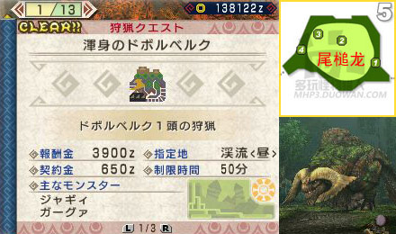 | |||||||
| 村★★★★★★ | 1. 讨伐尾槌龙 | 目标：尾槌龙x1 | |||||
同村5星的紧急任务，尾槌龙同样初始在5区。
| |||||||
任务2.讨伐角龙（关键任务）
| 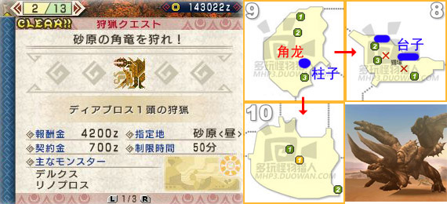 | ||||||
| 村★★★★★★ | 2. 讨伐角龙 | 目标：角龙x1 | ||||
| 【关键任务】 怪物猎人系列怀旧战之一。在9区触发角龙动画。它的攻击方式和前作的角龙差不多，近战打法主要是使劲砍肉质较软的腿，砍倒后再砍尾巴或头。当它完全钻入地下时扔音爆弹可以把它炸得任人宰割一段时间(怒时无效)。9区有个大柱子可以引它去撞，它的角会撞进柱子里短时间内拔不出来(若双角被破则不再卡角)，8区有个可以爬上去的小台子也具有同样的卡角效果(不过小台子容易被怪打坏)。
| ||||||
任务3.讨伐轰龙（关键任务）
| 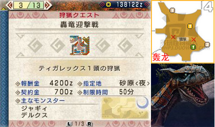 | ||||||
| 村★★★★★★ | 3. 讨伐轰龙 | 目标：轰龙x1 | ||||
| 【关键任务】 怪物猎人系列怀旧战之一。在4区触发轰龙动画。轰龙的攻击方式基本还是沿袭前作，在它的左侧进行攻击比较安全。轰龙的吼叫比较特殊，如果离它比较近会被震飞+伤血。此战带有回避性能的装备再次大放光彩，连吼叫也能避过。当轰龙发怒时可以扔闪光弹进行牵制。
| ||||||
任务4.讨伐尾槌龙
| 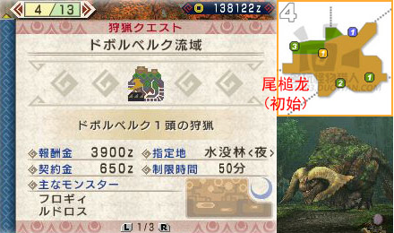 | |||||||
| 村★★★★★★ | 4. 讨伐尾槌龙 | 目标：尾槌龙x1 | |||||
嗯嗯，这关又是搞笑型尾槌龙。它出现在4区，有向2区转移的趋势。
| |||||||
任务5.狩猎尾槌龙、水兽
| 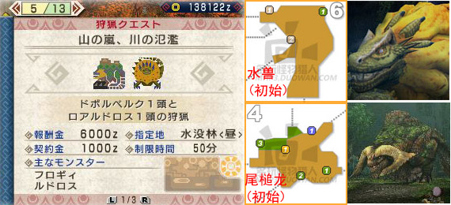 | ||||||||||||
| 村★★★★★★ | 5. 狩猎尾槌龙、水兽 | 目标：尾槌龙x1 水兽x1 | ||||||||||
水没林两大肉的见面会~建议先击杀初始于6区的水兽，再去收拾尾槌龙。火属性武器很好很通吃。
| ||||||||||||
任务6.讨伐轰龙
| 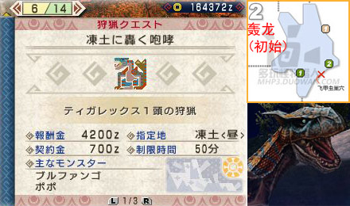 | ||||||
| 村★★★★★★ | 6. 狩猎轰龙 | 目标：轰龙x1 | ||||
| 【隐藏任务】 轰龙初始在2区。和砂原不同，冻土的轰龙用爪子推出的不是土球而是冰球。
| ||||||
任务7.狩猎冰牙龙
| 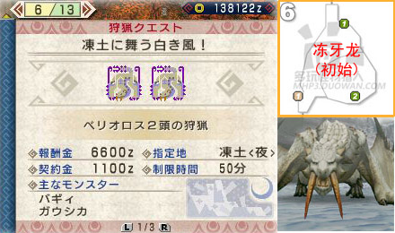 | |||||||
| 村★★★★★★ | 7. 狩猎冰牙龙 | 目标：冰牙龙x2 | |||||
两只冰牙龙均初始在6区，稍等一会即会分开。
| |||||||
任务8.狩猎轰龙、毒怪龙
| 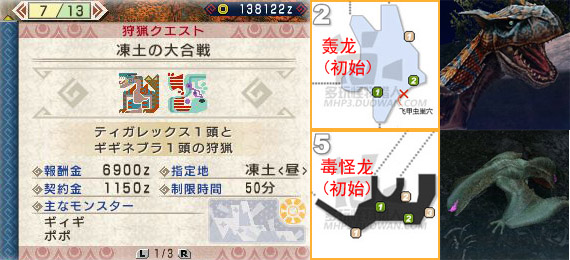 | ||||||||||||
| 村★★★★★★ | 8. 狩猎轰龙、毒怪龙 | 目标：轰龙x1 毒怪龙x1 | ||||||||||
轰龙初始在2区而毒怪龙初始在5区。
| ||||||||||||
任务9.狩猎炎戈龙（关键任务）
| 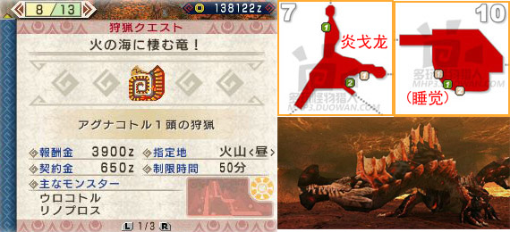 | |||||||
| 村★★★★★★ | 9. 狩猎炎戈龙 | 目标：炎戈龙x1 | |||||
| 【关键任务】 建议自带若干解除燃烧状态的药品。新怪炎戈龙亮相于7区。炎戈龙分为黄色的岩浆状态和暗红色的冷却状态，其中黄色时肉质较软，而暗红色时弹刀弹得很严重，最好等它再次钻地变回黄色。把它相应部位破坏掉之后，变成暗红色时这里也不会再弹刀。在它朝前边喷激光时可以安逸的砍会头或胸，而钻地露出上半身喷射360°激光时可以躲进它怀里避难。在它非怒状态潜地时扔音爆有效。炎戈龙血少时回10区睡觉。
| |||||||
任务10.狩猎爆锤龙
| 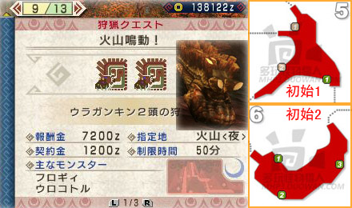 | |||||||
| 村★★★★★★ | 10. 狩猎爆锤龙 | 目标：爆锤龙x2 | |||||
如今的怪越来越喜欢晃悠到一起了……在行商人那里多买些臭玉(こやし玉)准备喂爆锤龙吃吧。
| |||||||
任务11.狩猎雄火龙、雌火龙
| 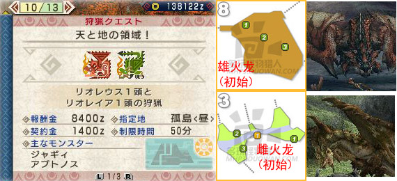 | ||||||||||||
| 村★★★★★★ | 11. 狩猎雄火龙、雌火龙 | 目标：雄火龙x1 雌火龙x1 | ||||||||||
建议自带闪光弹若干。雄火龙初始8区，雌火龙初始3区，飞行趋势虽然有多种，不过它俩更倾向于如胶似漆比翼双飞(臭玉是破坏感情的好物)。雄火龙血量较少，而雌火龙容易欺负，想先杀哪只就集火吧。
| ||||||||||||
任务12.大型连续狩猎
| 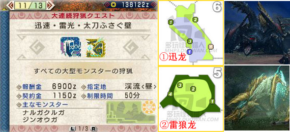 | ||||||||||||
| 村★★★★★★ | 12. 大型连续狩猎 | 目标：迅龙x1 雷狼龙x1(连续) | ||||||||||
大型连续狩猎又开始了(55555挖不到素材啊)。迅龙首先于6区登场，其次是5区的雷狼龙。选择火属性武器较好。
| ||||||||||||
任务13.大型连续狩猎
| 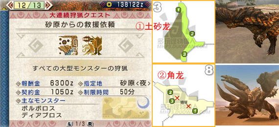 | ||||||||||||
| 村★★★★★★ | 13. 大型连续狩猎 | 目标：土砂龙x1 角龙x1(连续) | ||||||||||
土砂龙初始于3区，角龙初始于8区。选择冰属性武器较好。
| ||||||||||||
任务14.大型连续狩猎

| ||||||||||||
| 村★★★★★★ | 14. 大型连续狩猎 | 目标：雄火龙x1 炎戈龙x1(连续) | ||||||||||
雄火龙初始于3区有向4区转移的趋势，炎戈龙初始于7区。本场战斗龙属性效果最好。
| ||||||||||||
| 此时就算打完所有6★任务，可能也只获得银色的Clear。当完成包括最终紧急任务在内的所有村任务之后，最终的村隐藏任务便会在此出现！ | ||||||||||||
村最终紧急任务.讨伐峯山龙
| 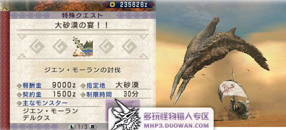 | |||||||
| 村最终紧急任务！ | 讨伐峯山龙 | 目标：峯山龙x1 保护船只不被破坏 | |||||
| 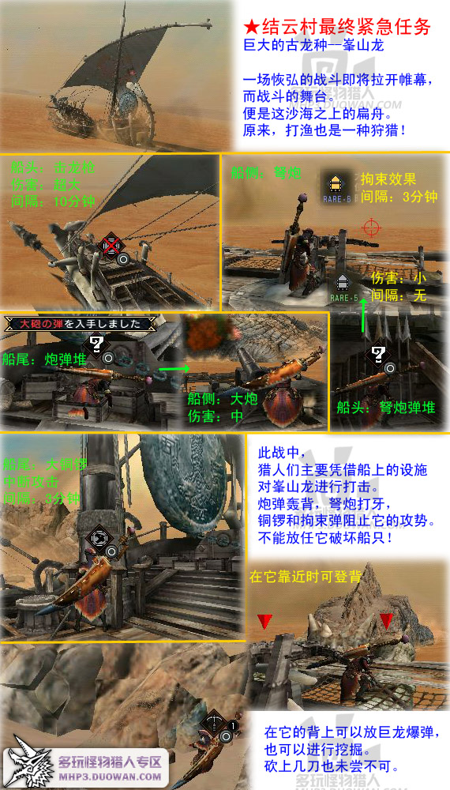 | |||||||
| ①猫会挖取炮弹帮忙开炮，但最好别带扔爆弹的猫，不然可能会被它炸飞。 ②两种炮弹都不是无限捡取的，不过进决战阶段时会刷新。
| |||||||
|
| |
| 村长任务1星 - 村长任务2星 - 村长任务3星 - 村长任务4星 - 村长任务5星 - 村长任务6星 - 村长任务7星 |